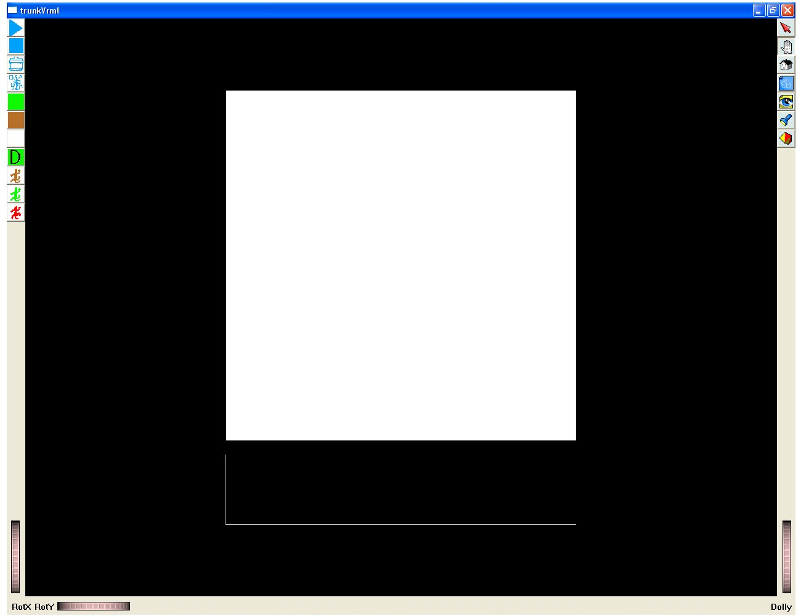
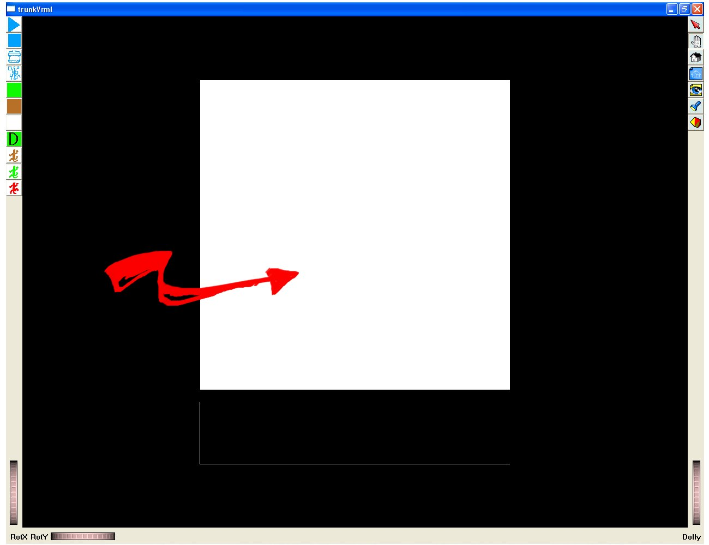
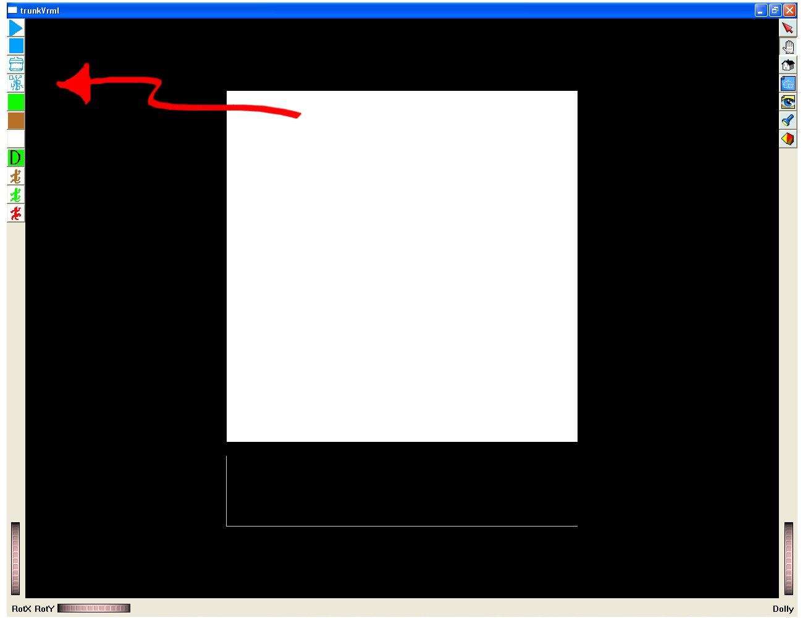
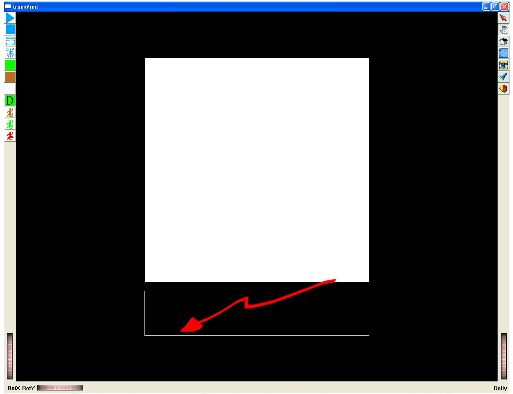
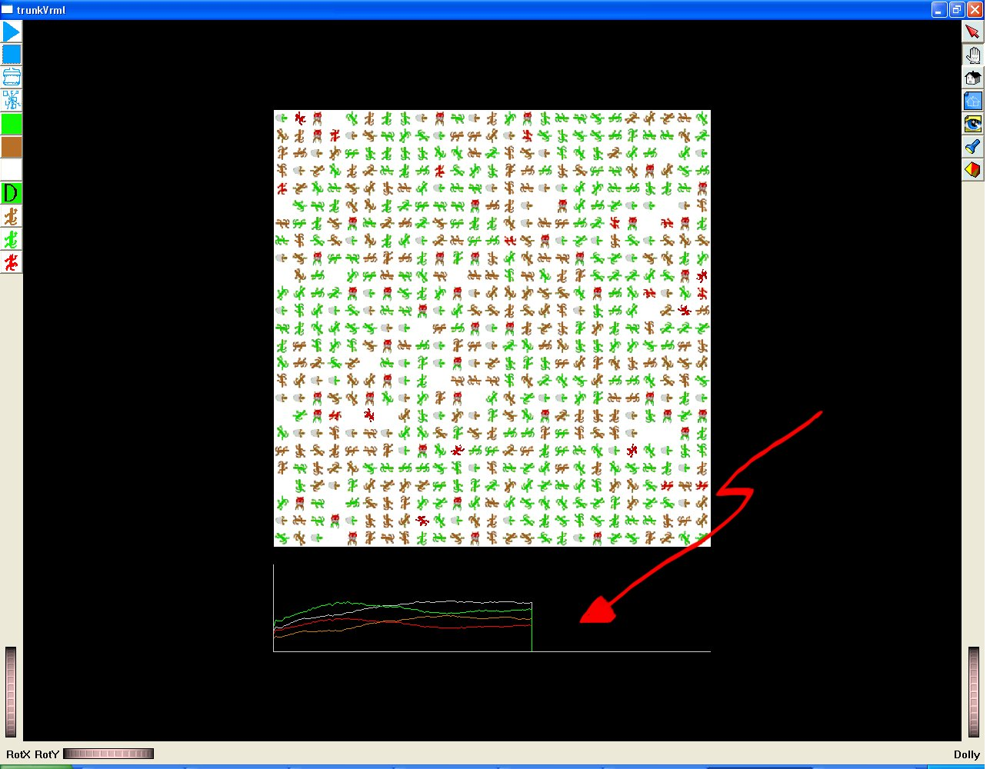
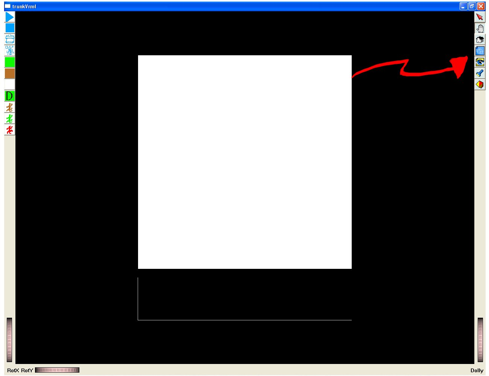
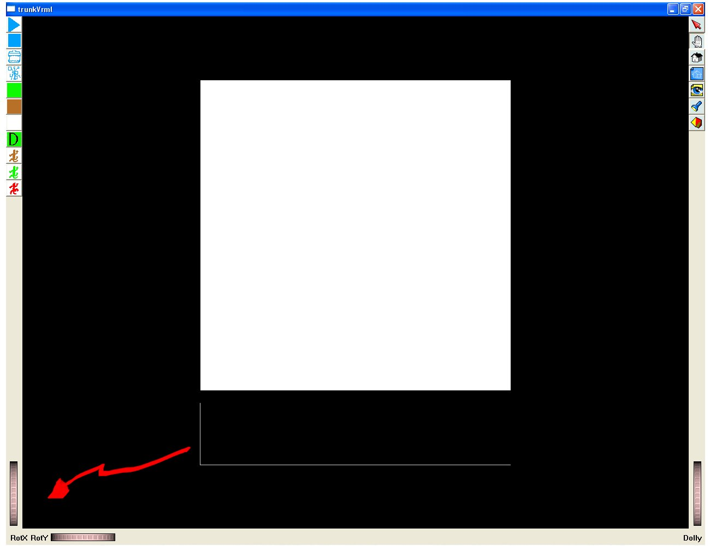

Esta
interfaz cuenta con ciertas partes básicas:
1)
El
tablero, en
esta parte es
donde se pueden apreciar a los organismos con sus interacciones, como
la depredación
y la reproducción, además, aunque de manera
muy simplista
también se puede
observar el tipo de medio ambiente representado por
la imagen y el color
de fondo.

2)
Los botones de la práctica:

En
esta área se encuentran todos los botones de control de la
practica, desde el
avance versus stop, hasta diferentes botones para modificar el numero
de
individuos etc.
3)
La
parte de abajo en la pantalla central es donde se grafican los valores
de las
cantidades “relevantes” en la practica conforme se va desarrollando.


4)
Los
botones de la derecha son botones para modificar la imagen o modificar
la interacción
con el cursor y la imagen.

5) Las
ruedas de los lados son para modificar la perspectiva de la imagen.

Instalación
del software.
El
programa
hecho para las prácticas funciona de manera normal en el
ambiente Windows, sin
embargo se necesita algunas partes actualizadas del mismo, la cuales no
se
presentan de manera cotidiana en las computadoras excepto tal ves las
mas
nuevas, si al momento de probarlo aparecen mensajes de error,
probablemente es
necesario instalar el .net framework 2.0 el cual a su ves necesita el
instalador de Microsoft 3.0, estos son muy fáciles de instalar,
y de la manera
mas trivial es poner que si a todo.
Framework.
Instalador.
Práctica 1.
Práctica 2.
Práctica 3.